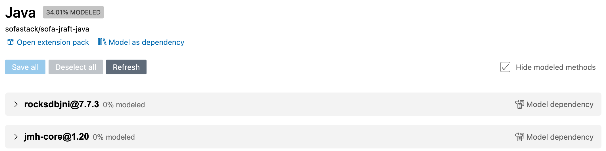
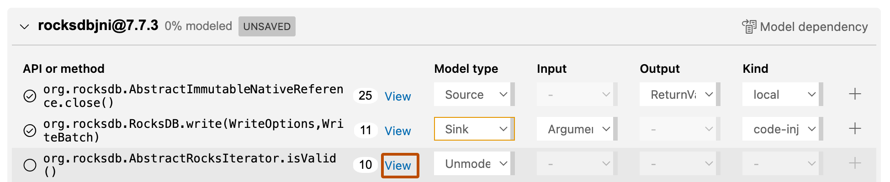
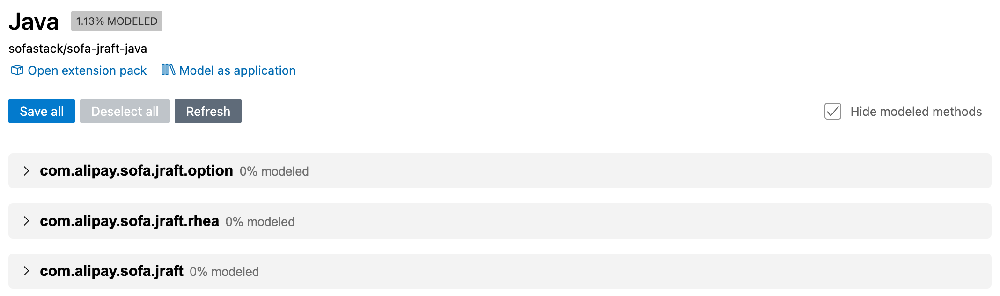
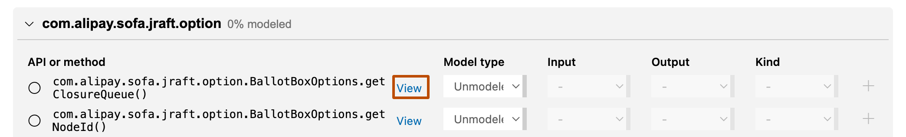
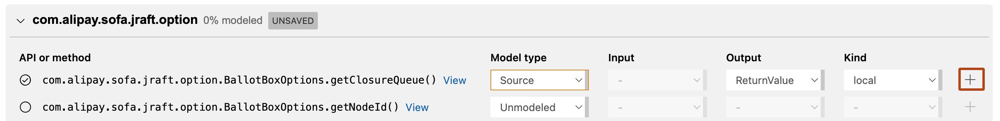

You can view, write, and edit CodeQL model packs in Visual Studio Code.
Note
CodeQL model packs are currently in public preview and subject to change. Model packs are supported for C/C++, C#, Java/Kotlin, Python, Ruby, and Rust analysis.
The CodeQL model editor in the CodeQL extension for Visual Studio Code supports modeling dependencies for C#, Java/Kotlin, Python, and Ruby.
With CodeQL model packs, you can expand your CodeQL code scanning analysis to recognize custom libraries and frameworks used by your codebase that are not supported by default. With the CodeQL model editor, you can create your own model packs. The model editor guides you through modeling the calls to external dependencies in your application, or fully modeling all the public entry and exit points in an external dependency.
For more information about customizing code scanning analysis with model packs, see Editing your configuration of default setup and Workflow configuration options for code scanning.
When you open the model editor, it analyzes the currently selected CodeQL database and identifies where the application uses external APIs and all public methods. An external (or third-party) API is any API that is not part of the CodeQL database you have selected.
The model editor has two different modes:
Application mode (default view): The editor lists each external framework used by the selected CodeQL database. When you expand a framework, a list of all calls to and from the external API is shown with the options available to model dataflow through each call. This mode is most useful for improving the CodeQL results for a specific codebase.
Dependency mode: The editor identifies all of the publicly accessible APIs in the selected CodeQL database. This view guides you through modeling each public API that the codebase makes available. When you have finished modeling the entire API, you can save the model and use it to improve the CodeQL analysis for all codebases that use the dependency.
The rest of this article covers the practical aspects of modelling dependencies using the CodeQL model editor. For technical information, see Customizing library models for Java and Kotlin, Customizing Library Models for Python, Customizing Library Models for Ruby, and Customizing library models for C# in the CodeQL language documentation.
Note
To use this public preview functionality, install the latest version of the CodeQL extension for Visual Studio Code.
Open your CodeQL workspace in VS Code. For example, the vscode-codeql-starter workspace. If you are using the starter workspace, update the ql submodule from main to ensure that you have the queries used to gather data for the model editor.
In Visual Studio Code, click QL in the left sidebar to display the CodeQL extension.
In the "Databases" view, select the CodeQL database that you want to model from.
In the CodeQL "Method Modeling" view, click Start modeling to display the model editor. Alternatively, use the VS Code Command Palette to run the CodeQL: Open Model Editor (Beta) command.
The CodeQL model editor runs a series of telemetry queries to identify APIs in the code, and the editor is displayed in a new tab.
When the telemetry queries are complete, the APIs that have been identified are shown in the editor.
Tip
You can move the CodeQL "Method Modeling" view from the primary sidebar to the secondary sidebar, if you want more space while you are modeling calls or methods. If you close the view, you can reopen it from the "View" menu in VS Code and clicking Open View....
You typically use this approach when you are looking at a specific codebase where you want to improve the precision of CodeQL results. This is useful when the codebase uses frameworks or libraries that are not supported by CodeQL, and if the source code of the framework or library is not included in the analysis.
This section uses an open source Java project called "sofa-jraft" as an example. The experience of modeling calls to external APIs written in other compiled languages is similar.
In Visual Studio Code, select the CodeQL database that you want to improve CodeQL coverage for.
Display the CodeQL model editor. By default the editor runs in application mode, so the list of external APIs used by the selected codebase is shown.

Click to expand an external API and view the list of calls from the codebase to the external dependency.

Click View associated with an API call or method to show where it is used in your codebase.
The file containing the first call from your codebase to the API is opened, and a CodeQL "Methods Usage" view is displayed in VS Code (where the "Problems" and "Terminal" views are usually displayed). The CodeQL "Methods Usage" view lists of all the calls from your code to the API, grouped by method. You can click through each use to decide how to model your use of the method.
When you have determined how to model your use of the method, you can select a different model type. Click the dropdown under "Model Type" in the CodeQL "Method Modeling" view of the CodeQL extension. This change is automatically reflected in the main model editor.
The remaining fields in that row are updated with the options available for the chosen model type:
Define the "Kind" of dataflow for the model.
When you have finished modeling, display the main model editor and click Save all or Save (shown at the bottom-right of each expanded list of methods). The percentage of methods modeled in the editor is updated.
The models are stored in your workspace at .github/codeql/extensions/CODEQL-MODEl-PACK, where CODEQL-MODEL-PACK is the name of the CodeQL database that you selected. That is, the name of the repository, hyphen, the language analyzed by CodeQL. For more information, see Creating and working with CodeQL packs.
The models are stored in a series of YAML data extension files, one for each external API. For example:
.github/codeql/extensions/sofa-jraft-java # the model pack directory
models
jmh-core.model.yml # models calls to jmh-core@1.20
rocksdbjni.model.yml # models calls to rocksdbjni@7.7.3
You typically use this method when you want to model a framework or library that your organization uses in more than one codebase. Once you have finished creating and testing the model, you can publish the CodeQL model pack to the GitHub Container registry for your whole organization to use.
This section uses an open source Java project called "sofa-jraft" as an example. The experience of modeling calls to external APIs written in other compiled languages is similar.
Select the CodeQL database that you want to model.
Display the CodeQL model editor. By default the editor runs in application mode. Click Model as dependency to display dependency mode. The screen changes to show the public API of the framework or library.

Click to expand a package and view the list of available methods.
Click View associated with a method to show its definition.

When you have determined how to model the method, define the "Model type".
The remaining fields in that row are updated with the options available for the chosen model type:
Define the "Kind" of dataflow for the model.
When you have finished modeling, click Save all or Save (shown at the bottom-right of each expanded list of calls). The percentage of calls modeled in the editor is updated.
The models are stored in your workspace at .github/codeql/extensions/CODEQL-MODEL-PACK, where CODEQL-MODEL-PACK is the name of the CodeQL database that you selected. That is, the name of the repository, hyphen, the language analyzed by CodeQL. For more information, see Creating and working with CodeQL packs.
The models are stored in a series of YAML data extension files, one for each public method. For example:
.github/codeql/extensions/sofa-jraft-java # the model pack directory
models
com.alipay.sofa.jraft.option.model.yml # models public methods in package
com.alipay.sofa.jraft.rhea.options.model.yml
The editor will create a separate model file for each package that you model.
Some methods support more than one data flow. It is important to model all the data flows for a method, otherwise you cannot detect all the potential problems associated with using the method. First you model one data flow for the method, and then use the + button in the method row to specify a second data flow model.

You can test any CodeQL model packs you create in VS Code with the "Running Queries: Use Extension Packs" setting. For more information, see Customizing settings. This method works for both databases and for variant analysis repositories.
To run queries on a CodeQL database with any model packs that are stored within the .github/codeql/extensions directory of the workspace, update your settings.json file with: "codeQL.runningQueries.useExtensionPacks": "all",
To run queries on a CodeQL database without using model packs, update your settings.json file with: "codeQL.runningQueries.useExtensionPacks": "none",
If your model is working well, you should see a difference in the results of the two different runs. If you don't see any differences in results, you may need to introduce a known bug to verify that the model behaves as expected.